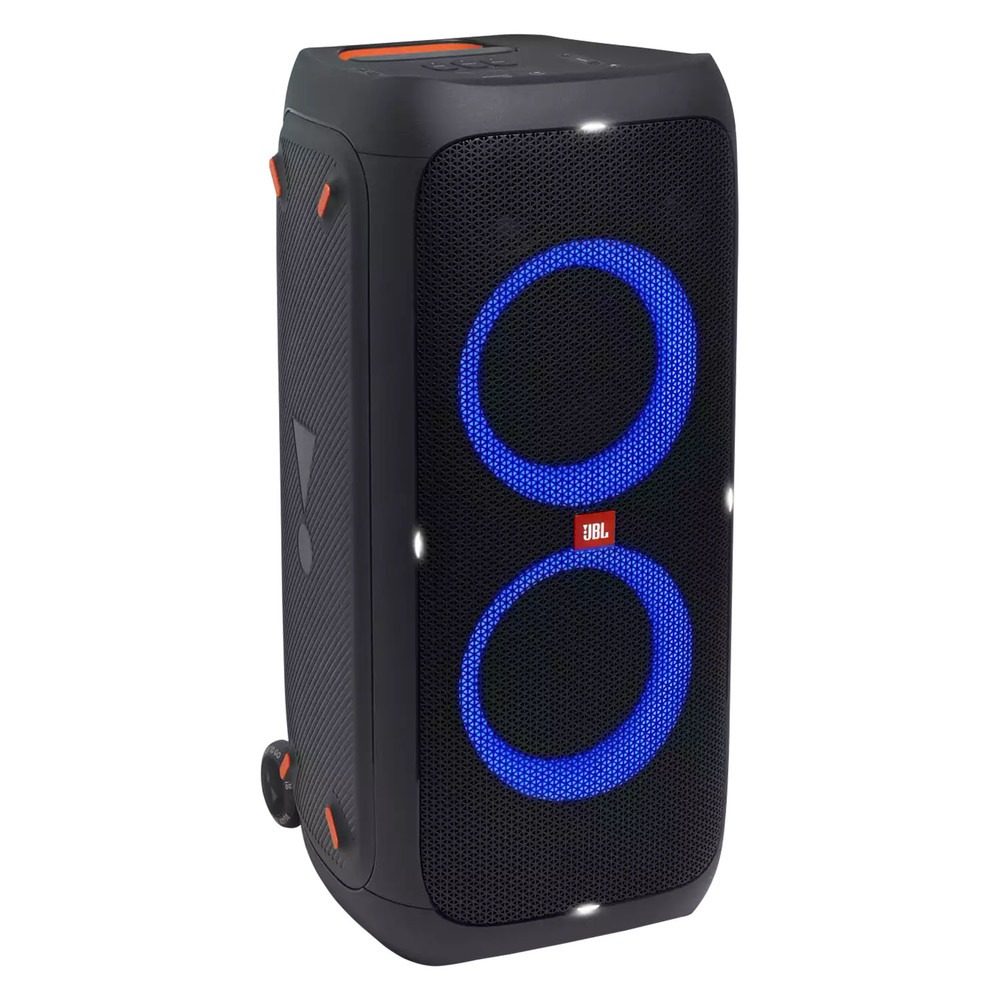

Аудиосистемы
Музыкальный центр JBL PartyBox 310
Портативная акустическая система с функцией Bluetooth, яркой подсветкой и фирменным звучанием JBL
Характеристики товара
- Динамики 2×176 мм (низкочастотные) + 2×65 мм (высокочастотные)
- Полная выходная мощность 100 Вт
- Частотная характеристика: 50 Гц — 20 кГц (-6дБ)
- Масса нетто 17.42 кг / 16,5 фунтов
- Версия Bluetooth® 5.1
Подробное описание товара
Ваша вечеринка будет слышна на весь квартал или пляж благодаря фирменному звучанию JBL мощностью 240 ватт. Пойте, читайте рэп, играйте на гитаре, а затем включите басы и наблюдайте за тем, как оживает танцпол.br
18 часов работы от батареи достаточно, чтобы танцевать от разогрева до восхода солнца и даже дольше. Хотите еще дольше? Включите JBL PartyBox 310 в розетку и танцуйте хоть все выходные.
Перенесите вечеринку с заднего двора к бассейну. JBL PartyBox 310 с защитой от брызг класса IPX4 не страшен ни дождь, ни зной.
Соедини совместимые колонки по беспроводной сети с помощью функции TWS (True Wireless Stereo с использованием Bluetooth-подключения для объединения двух колонок) или с помощью кабеля RCA-RCA.
ЦЕНА 34 990 ₽